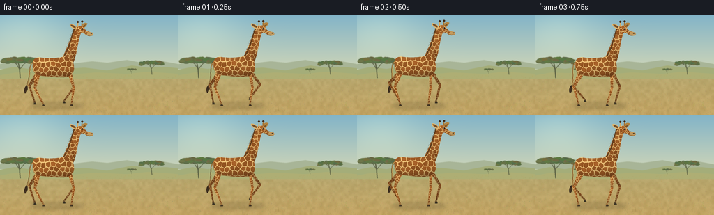
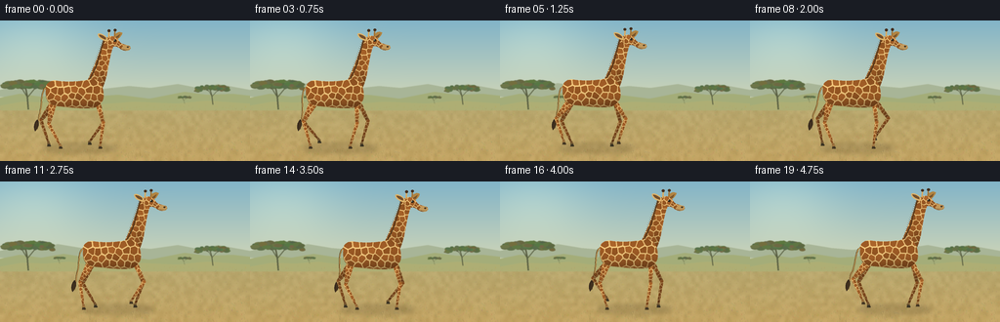

CODING AGENTS AS PIXEL WORLD MODELS
traex/GPT-6.1-Sol · instance_preservation_0010
点击播放 · 原生 RGB 像素
逐轮保存的候选
回放视频、检查图与代码变化。
每份候选均可单独播放。实际图片检查记录在下方工具轨迹中。
候选 01播放与检查图
点击播放 · 原生 RGB 像素


展开代码变化
--- 上一保存版本
+++ 本次保存版本
@@ -0,0 +1,291 @@
+from pathlib import Path
+import json, math
+import numpy as np
+from PIL import Image, ImageDraw, ImageFilter
+import artifact_io
+
+ROOT = Path(__file__).resolve().parent
+SPEC = json.loads((ROOT / 'task_spec.json').read_text())
+W,H,N = SPEC['width'],SPEC['height'],SPEC['frames']
+S=4
+rng = np.random.default_rng(117)
+
+def points(path):
+ out=[]; p=None
+ for cmd in path:
+ if cmd[0]=='M': p=np.array(cmd[1:],float); out.append(tuple(p))
+ elif cmd[0]=='L': p=np.array(cmd[1:],float); out.append(tuple(p))
+ elif cmd[0]=='C':
+ a,b,c=np.array(cmd[1:3]),np.array(cmd[3:5]),np.array(cmd[5:7]); old=p.copy()
+ for t in np.linspace(0,1,18)[1:]:
+ q=(1-t)**3*old+3*(1-t)**2*t*a+3*(1-t)*t*t*b+t**3*c
+ out.append(tuple(q))
+ p=c
+ return out
+
+def clip(poly, normal, limit):
+ if not poly: return []
+ result=[]
+ for a,b in zip(poly, poly[1:]+poly[:1]):
+ da=np.dot(a,normal)-limit; db=np.dot(b,normal)-limit
+ if da<=0: result.append(a)
+ if (da<=0)!=(db<=0):
+ result.append(np.array(a)+(np.array(b)-a)*da/(da-db))
+ return result
+
+class Part:
+ def __init__(self, outline, cell=6., shade=1., plain=False, seed=1):
+ self.poly = np.array(outline,float)
+ self.origin=np.floor(self.poly.min(0)-2)
+ self.maximum=np.ceil(self.poly.max(0)+2)
+ ww,hh=((self.maximum-self.origin)*S).astype(int)
+ rr=np.random.default_rng(seed)
+ mask=Image.new('L',(ww,hh)); md=ImageDraw.Draw(mask)
+ local=(self.poly-self.origin)*S
+ md.polygon([tuple(p) for p in local], fill=255)
+ # Warm ivory seams surrounding irregular chestnut tessellations.
+ coats=Image.new('RGB',(ww,hh),(225,184,115))
+ cd=ImageDraw.Draw(coats)
+ if not plain:
+ seeds=[]
+ x0,y0=self.origin; x1,y1=self.maximum
+ for j,y in enumerate(np.arange(y0-cell,y1+cell,cell*.95)):
+ for x in np.arange(x0-cell,x1+cell,cell):
+ seeds.append([x+(.42*cell if j%2 else 0)+rr.uniform(-.27,.27)*cell, y+rr.uniform(-.27,.27)*cell])
+ seeds=np.array(seeds)
+ for i,c in enumerate(seeds):
+ poly=[np.array([x0-1,y0-1]),np.array([x1+1,y0-1]),np.array([x1+1,y1+1]),np.array([x0-1,y1+1])]
+ for other in seeds:
+ if np.all(other==c): continue
+ if np.linalg.norm(other-c)>cell*3: continue
+ poly=clip(poly,other-c,(np.dot(other,other)-np.dot(c,c))/2)
+ if not poly: break
+ if len(poly)<3: continue
+ arr=np.array(poly); center=arr.mean(0)
+ arr=center+(arr-center)*rr.uniform(.79,.87)
+ # A subtly rounded corner makes the markings organic, not diagrammatic.
+ rounded=[]
+ for k,v in enumerate(arr):
+ rounded += [v*.90+arr[k-1]*.10, v*.90+arr[(k+1)%len(arr)]*.10]
+ q=(np.array(rounded)-self.origin)*S
+ v=rr.uniform(-13,13)
+ col=(int(151+v),int(88+v*.65),int(37+v*.35))
+ cd.polygon([tuple(p) for p in q], fill=col)
+ ar=np.asarray(coats).astype(float)
+ yy,xx=np.mgrid[0:hh,0:ww]
+ yf=yy/max(1,hh-1)
+ # Broad soft modelling: illuminated spine, round flank, dark underside.
+ light=.94+.12*np.sin(np.pi*(yf+.17))-.22*yf**3
+ light += .035*np.cos(xx/max(1,ww)*math.pi)
+ noise=rr.normal(0,.9,(hh,ww))
+ ar=ar*light[...,None]*shade+noise[...,None]
+ rgba=np.dstack((np.clip(ar,0,255).astype(np.uint8), np.asarray(mask)))
+ self.image=Image.fromarray(rgba,'RGBA')
+ def paste(self, canvas, offset, angle=0, pivot=(0,0)):
+ # Output-to-local affine mapping preserves all markings during movement.
+ angle=math.radians(angle); c,s=math.cos(angle),math.sin(angle)
+ ox,oy=offset; px,py=pivot
+ coeff=(c,s,S*(px-self.origin[0]-c*(ox+px)-s*(oy+py)),
+ -s,c,S*(py-self.origin[1]+s*(ox+px)-c*(oy+py)))
+ tile=self.image.transform(canvas.size,Image.Transform.AFFINE, coeff,Image.Resampling.BICUBIC)
+ canvas.alpha_composite(tile)
+
+# Anatomy in a common, unchanging coat coordinate system.
+body_outline=points([('M',-30,-7),('C',-31,-13,-25,-17,-19,-16),('C',-8,-14,8,-15,17,-18),('C',25,-18,29,-9,29,-2),('C',30,5,25,10,19,12),('C',9,13,-7,12,-19,10),('C',-27,9,-31,3,-30,-7)])
+neck_outline=points([('M',12,-15),('C',19,-28,23,-41,28,-54),('C',29,-58,32,-60,35,-59),('C',39,-59,40,-54,38,-49),('C',35,-40,34,-30,32,-21),('C',30,-13,28,-6,24,-3),('C',19,-6,15,-10,12,-15)])
+head_outline=points([('M',31,-59),('C',35,-63,40,-62,43,-59),('C',45,-57,45,-55,48,-54),('L',55,-52),('C',58,-50,56,-47,53,-47),('C',48,-46,45,-50,42,-51),('C',38,-51,33,-52,31,-56),('C',30,-57,30,-58,31,-59)])
+body=Part(body_outline,7.5,seed=34)
+neck=Part(neck_outline,6.0,seed=46)
+head=Part(head_outline,5,seed=63)
+# Small limbs are separate textured tapered bone segments.
+def legpart(length,w0,w1,shade,seed):
+ poly=points([('M',-w0,0),('C',-w0,-2,w0,-2,w0,0),('L',w1,length-1),('C',w1,length+2,-w1,length+2,-w1,length-1),('L',-w0,0)])
+ return Part(poly,3.8,shade,seed=seed)
+limbs={}
+for far in [True,False]:
+ for front in [False,True]:
+ l1,l2=(23,24) if front else (22,25)
+ dark=.77 if far else 1.
+ limbs[far,front]=(legpart(l1,2.5 if front else 4.,1.65,dark,12+int(front)),legpart(l2,1.7,1.,dark,18+int(front)),l1,l2)
+
+# The atmosphere and terrain are independent of the animal's moving texture.
+def background():
+ Y,X=np.mgrid[0:H*S,0:W*S]; y=Y/S; x=X/S
+ sky_top=np.array([130,180,200]); sky_bottom=np.array([218,218,181])
+ f=np.clip(y/92,0,1)[...,None]
+ ar=sky_top[None,None,:]*(1-f)+sky_bottom[None,None,:]*f
+ glow=np.exp(-((x-34)**2/(58**2)+(y-21)**2/(40**2)))[...,None]
+ ar=ar+glow*np.array([25,19,9])
+ ar=np.broadcast_to(ar,(H*S,W*S,3)).copy()
+ # Dry earth, with soft natural variation at several scales.
+ rr=np.random.default_rng(304)
+ field=np.asarray(Image.fromarray(rr.integers(0,255,(36,64),dtype=np.uint8)).resize((W*S,H*S),Image.Resampling.BICUBIC)).astype(float)/255-.5
+ fine=rr.normal(0,1.8,(H*S,W*S))
+ floor=np.zeros_like(ar)
+ depth=np.clip((y-80)/64,0,1)
+ for ch,(a,b) in enumerate([(182,194),(168,163),(112,98)]):
+ floor[...,ch]=a+(b-a)*depth+field*13+fine
+ ar[y>=82]=floor[y>=82]
+ image=Image.fromarray(np.clip(ar,0,255).astype(np.uint8)).convert('RGBA'); d=ImageDraw.Draw(image)
+ def poly(ps,col): d.polygon([(int(a*S),int(b*S)) for a,b in ps],fill=col)
+ # Hazy distant ridges.
+ poly([(0,78),(0,71),(19,66),(38,69),(59,64),(83,68),(105,70),(132,67),(154,69),(182,65),(203,69),(223,65),(256,71),(256,86)],(168,181,151,255))
+ poly([(0,79),(20,75),(42,78),(65,74),(91,78),(121,76),(153,80),(189,73),(212,76),(238,75),(256,77),(256,88),(0,88)],(164,173,121,255))
+ poly([(0,87),(23,83),(46,84),(70,82),(100,86),(138,83),(181,85),(212,82),(256,85),(256,92),(0,92)],(174,174,116,255))
+ def tree(cx,ground,size,seed):
+ r=np.random.default_rng(seed)
+ canopy_y=ground-size*.77
+ def line(ps,c,w): d.line([(int(a*S),int(b*S)) for a,b in ps],fill=c,width=max(1,int(w*S)),joint='curve')
+ trunk=(89,95,66,255)
+ line([(cx,ground),(cx-1,ground-size*.36),(cx-3,canopy_y+size*.1)],trunk,max(.45,size*.048))
+ for side in [-1,1]:
+ for off in range(3):
+ ex=cx+side*(size*.38+off*size*.12)
+ line([(cx-1,ground-size*.35),(cx+side*size*.17,ground-size*.58),(ex,canopy_y)],trunk,max(.3,size*.025))
+ # Low flat-topped acacia crown, built from many overlapping leaf clusters.
+ for j in range(90):
+ xx=cx+r.uniform(-.71,.71)*size; ratio=(xx-cx)/(size*.78)
+ cy=canopy_y+r.uniform(-.05,.12)*size + .09*size*abs(ratio)**3
+ rx=r.uniform(.06,.14)*size; ry=r.uniform(.032,.065)*size
+ col=(int(r.uniform(82,117)),int(r.uniform(102,123)),int(r.uniform(61,79)),255)
+ d.ellipse(((xx-rx)*S,(cy-ry)*S,(xx+rx)*S,(cy+ry)*S),fill=col)
+ tree(29,91,35,9); tree(218,86,23,13); tree(189,85,9,65); tree(61,84,8,76)
+ # Dry stubble gets progressively larger towards the camera.
+ for i in range(2400):
+ gx=rng.uniform(0,W); gy=rng.uniform(87,H+2); dep=(gy-80)/64
+ length=rng.uniform(.2,1.6)*(dep+.15)
+ color=(int(rng.uniform(143,206)),int(rng.uniform(126,181)),int(rng.uniform(70,113)),rng.integers(90,210).item())
+ d.line([(gx*S,gy*S),((gx+rng.uniform(-.8,.8)*dep)*S,(gy-length)*S)],fill=color,width=max(1,int(.2*S)))
+ return image.filter(ImageFilter.GaussianBlur(.32*S))
+BG=background()
+
+def line(draw,ps,color,width):
+ draw.line([(round(x*S),round(y*S)) for x,y in ps], fill=color, width=max(1,round(width*S)), joint='curve')
+def ellipse(draw,box,color):
+ draw.ellipse(tuple(v*S for v in box),fill=color)
+def polygon(draw,ps,color): draw.polygon([(x*S,y*S) for x,y in ps],fill=color)
+def transform(ps,offset,angle=0,pivot=(0,0)):
+ a=math.radians(angle); c,s=math.cos(a),math.sin(a)
+ out=[]
+ for x,y in ps:
+ x-=pivot[0];y-=pivot[1]
+ out.append((offset[0]+pivot[0]+c*x-s*y,offset[1]+pivot[1]+s*x+c*y))
+ return out
+
+def draw_leg(canvas,x,y,front,far,phase):
+ # Grounded stance and raised return stroke. Ipsilateral pairs form a giraffe's four-beat gait.
+ stance=.65
+ ph=phase%1
+ stride=15.5
+ if ph<stance:
+ step=stride*(.5-ph/stance); lift=0
+ else:
+ u=(ph-stance)/(1-stance)
+ step=-stride/2+stride*(u*u*(3-2*u)); lift=6.4*math.sin(math.pi*u)
+ ax=22 if front else -23
+ ay=5 if front else 7
+ hip=np.array([x+ax+(1. if far else 0),y+ay])
+ foot=np.array([x+ax+step, (128.7 if far else 131.)-lift-2.7])
+ upper,lower,l1,l2=limbs[far,front]
+ vector=foot-hip; dist=np.linalg.norm(vector)
+ if dist>l1+l2-.05: dist=l1+l2-.05
+ u=vector/np.linalg.norm(vector)
+ projection=(l1*l1-l2*l2+dist*dist)/(2*dist)
+ perpendicular=np.array([-u[1],u[0]])
+ knee=hip+u*projection+perpendicular*math.sqrt(max(0,l1*l1-projection*projection))*(-1 if front else 1)
+ def bone(asset,a,b):
+ v=b-a; angle=math.degrees(math.atan2(-v[0],v[1]))
+ asset.paste(canvas,a,angle)
+ bone(upper,hip,knee); bone(lower,knee,foot)
+ d=ImageDraw.Draw(canvas)
+ dark=(70,56,36,255) if not far else (61,53,36,255)
+ # Rounded fetlock and the dark cloven hoof.
+ ellipse(d,(foot[0]-1.5,foot[1]-1.1,foot[0]+1.5,foot[1]+1.6),(159,118,64,255) if not far else (119,91,52,255))
+ polygon(d,[(foot[0]-1.15,foot[1]+.7),(foot[0]+1.2,foot[1]+.5),(foot[0]+2.3,foot[1]+2.4),(foot[0]+2.,foot[1]+3.0),(foot[0]-1.5,foot[1]+3.)],dark)
+ line(d,[(foot[0]+.8,foot[1]+1.8),(foot[0]+.8,foot[1]+2.9)],(39,34,25,255),.23)
+ return foot
+
+# A fixed handful of front grasses lies in front of the walking hooves.
+foreground=[]
+fr=np.random.default_rng(842)
+for i in range(52):
+ gx=fr.uniform(0,W); gy=fr.uniform(135,151); h=fr.uniform(2.4,7.)
+ foreground.append((gx,gy,h,fr.uniform(-1.7,1.7),fr.uniform(0,1)))
+
+frames=[]
+for index in range(N):
+ t=index/SPEC['fps']; cycle=t/1.72
+ x=77+13.86*t
+ y=77.+.58*math.cos(4*math.pi*cycle)
+ canvas=BG.copy()
+ shadow=Image.new('RGBA',canvas.size,(0,0,0,0)); sd=ImageDraw.Draw(shadow)
+ ellipse(sd,(x-33,126.5,x+43,135.5),(74,62,34,61))
+ ellipse(sd,(x-23,128.4,x+29,133.5),(70,57,30,38))
+ shadow=shadow.filter(ImageFilter.GaussianBlur(2.5*S));canvas.alpha_composite(shadow)
+ # Tail is drawn behind the hindquarters and swishes gently.
+ d=ImageDraw.Draw(canvas)
+ sway=3.0*math.sin(2*math.pi*cycle*.63)
+ tail=points([('M',-28,-10),('C',-37,-7,-33,7,-37+sway,19),('C',-38+sway,23,-37+sway,25,-39+sway,27)])
+ tail=transform(tail,(x,y))
+ line(d,tail,(95,68,34,255),1.5)
+ line(d,[(a+.35,b-.25) for a,b in tail],(202,159,87,255),.65)
+ tx,ty=tail[-1]
+ tuft=points([('M',tx,ty-3),('C',tx-3,ty,tx-4,ty+5,tx-2,ty+9),('C',tx,ty+7,tx+3,ty+3,tx+1,ty-2)])
+ polygon(d,tuft,(55,41,28,255))
+ for k in range(4): line(d,[(tx-1+k*.55,ty),(tx-2+k*.8,ty+7)],(80,60,33,255),.25)
+ draw_leg(canvas,x,y,False,True,cycle+.50)
+ draw_leg(canvas,x,y,True,True,cycle+.68)
+ draw_leg(canvas,x,y,False,False,cycle)
+ draw_leg(canvas,x,y,True,False,cycle+.18)
+ # The shoulder and rump naturally occlude the roots of all four legs.
+ neck_angle=.75*math.sin(2*math.pi*cycle+.5)
+ neck.paste(canvas,(x,y),neck_angle,(22,-14))
+ body.paste(canvas,(x,y))
+ d=ImageDraw.Draw(canvas)
+ # Rounded contours are understated and are not black cartoon outlines.
+ line(d,transform(points([('M',-29,-5),('C',-32,1,-28,8,-21,9)]),(x,y)),(135,94,44,160),.55)
+ line(d,transform(points([('M',-15,10),('C',-4,12,10,12,20,10)]),(x,y)),(144,101,50,140),.45)
+ # Dark short mane runs along the back edge of the long neck.
+ mane=points([('M',29,-58),('C',26,-48,23,-36,20,-28),('L',15,-18)])
+ mane_world=transform(mane,(x,y),neck_angle,(22,-14))
+ line(d,mane_world,(93,59,28,255),1.45)
+ for j in range(22):
+ v=j/21; nx=29-14*v; ny=-58+40*v
+ ps=transform([(nx,ny),(nx-1.4,ny-.8)],(x,y),neck_angle,(22,-14))
+ line(d,ps,(89,56,27,255),.35)
+ # Head inherits the neck sway; each landmark retains its identity.
+ def hp(ps): return transform(ps,(x,y),neck_angle,(22,-14))
+ def hl(ps,col,w): line(d,hp(ps),col,w)
+ def he(box,col):
+ corners=hp([(box[0],box[1]),(box[2],box[3])]);ellipse(d,(*corners[0],*corners[1]),col)
+ # Far ear and ossicone.
+ polygon(d,hp(points([('M',38,-59),('C',40,-65,44,-67,48,-65),('C',47,-61,43,-58,40,-57)])),(177,132,65,255))
+ polygon(d,hp([(40,-60),(46,-64),(44,-60)]),(119,83,43,255))
+ hl([(40,-60),(40.3,-67)],(162,116,56,255),1.4)
+ he((39,-69,42,-66.5),(67,45,27,255))
+ head.paste(canvas,(x,y),neck_angle,(22,-14))
+ d=ImageDraw.Draw(canvas)
+ # Broad near ear with a pale rim and dark interior.
+ polygon(d,hp(points([('M',33,-59),('C',30,-63,26,-65,23,-64),('C',22,-60,28,-57,32,-56)])),(222,179,105,255))
+ polygon(d,hp(points([('M',31,-60),('C',28,-63,25,-63,24,-63),('C',25,-60,28,-59,31,-58)])),(114,78,44,255))
+ hl([(34,-60),(34.3,-66.5)],(217,170,96,255),1.6)
+ he((32.8,-68.5,35.8,-65.8),(67,45,27,255))
+ # Soft tan muzzle, visible nostril, mouth crease and expressive dark eye.
+ polygon(d,hp(points([('M',50,-53),('C',54,-52,57,-51,56,-49),('C',55,-46,50,-47,47,-49),('L',50,-53)])),(194,153,91,255))
+ he((52.6,-51.2,54.6,-49.8),(73,57,37,255))
+ hl([(48,-48.6),(52,-48),(55,-48.4)],(95,66,35,255),.42)
+ he((39,-58.2,42,-55.6),(108,73,37,255))
+ he((39.35,-58,41.65,-56.05),(31,29,22,255))
+ he((39.5,-57.8,40.2,-57.1),(235,228,200,255))
+ hl([(38.7,-58.7),(40.3,-59.1),(42,-58.5)],(126,83,38,255),.45)
+ hl([(43.4,-55),(46,-52.9)],(232,188,115,255),.55)
+ # Front grasses, sparse enough not to conceal the locomotion.
+ d=ImageDraw.Draw(canvas)
+ for gx,gy,gh,lean,v in foreground:
+ col=(int(163+v*39),int(141+v*37),int(78+v*35),230)
+ line(d,[(gx,gy),(gx+lean*.5,gy-gh*.6),(gx+lean,gy-gh)],col,.36)
+ line(d,[(gx,gy),(gx-1.4,gy-gh*.72)],col,.27)
+ final=canvas.convert('RGB').resize((W,H),Image.Resampling.LANCZOS)
+ frames.append(np.asarray(final,dtype=np.uint8))
+artifact_io.save(np.stack(frames),ROOT)
+print('Saved',len(frames),'RGB frames at',W,'x',H)
可观测工具轨迹
实际执行的命令与返回图片。
命令 1exit 0
/bin/bash -lc 'ls -la && cat prompt.txt && cat GENERATION_RULES.md && cat task_spec.json'
命令 2exit 0
/bin/bash -lc "cat artifact_io.py && python - <<'PY'
import PIL,numpy
print('Available: PIL, numpy')
PY"命令 3exit 0
/bin/bash -lc "cat > generate.py <<'PY'
from pathlib import Path
import json, math
import numpy as np
from PIL import Image, ImageDraw, ImageFilter
import artifact_io
ROOT = Path(__file__).resolve().parent
SPEC = json.loads((ROOT / 'task_spec.json').read_text())
W,H,N = SPEC['width'],SPEC['height'],SPEC['frames']
S=4
rng = np.random.default_rng(117)
def points(path):
out=[]; p=None
for cmd in path:
if cmd[0]=='M': p=np.array(cmd[1:],float); out.append(tuple(p))
elif cmd[0]=='L': p=np.array(cmd[1:],float); out.append(tuple(p))
elif cmd[0]=='C':
a,b,c=np.array(cmd[1:3]),np.array(cmd[3:5]),np.array(cmd[5:7]); old=p.copy()
for t in np.linspace(0,1,18)[1:]:
q=(1-t)**3*old+3*(1-t)**2*t*a+3*(1-t)*t*t*b+t**3*c
out.append(tuple(q))
p=c
return out
def clip(poly, normal, limit):
if not poly: return []
result=[]
for a,b in zip(poly, poly[1:]+poly[:1]):
da=np.dot(a,normal)-limit; db=np.dot(b,normal)-limit
if da<=0: result.append(a)
if (da<=0)"'!=(db<=0):
result.append(np.array(a)+(np.array(b)-a)*da/(da-db))
return result
class Part:
def __init__(self, outline, cell=6., shade=1., plain=False, seed=1):
self.poly = np.array(outline,float)
self.origin=np.floor(self.poly.min(0)-2)
self.maximum=np.ceil(self.poly.max(0)+2)
ww,hh=((self.maximum-self.origin)*S).astype(int)
rr=np.random.default_rng(seed)
mask=Image.new('"'L',(ww,hh)); md=ImageDraw.Draw(mask)
local=(self.poly-self.origin)*S
md.polygon([tuple(p) for p in local], fill=255)
# Warm ivory seams surrounding irregular chestnut tessellations.
coats=Image.new('RGB',(ww,hh),(225,184,115))
cd=ImageDraw.Draw(coats)
if not plain:
seeds=[]
x0,y0=self.origin; x1,y1=self.maximum
for j,y in enumerate(np.arange(y0-cell,y1+cell,cell*.95)):
for x in np.arange(x0-cell,x1+cell,cell):
seeds.append([x+(.42*cell if j%2 else 0)+rr.uniform(-.27,.27)*cell, y+rr.uniform(-.27,.27)*cell])
seeds=np.array(seeds)
for i,c in enumerate(seeds):
poly=[np.array([x0-1,y0-1]),np.array([x1+1,y0-1]),np.array([x1+1,y1+1]),np.array([x0-1,y1+1])]
for other in seeds:
if np.all(other==c): continue
if np.linalg.norm(other-c)>cell*3: continue
poly=clip(poly,other-c,(np.dot(other,other)-np.dot(c,c))/2)
if not poly: break
if len(poly)<3: continue
arr=np.array(poly); center=arr.mean(0)
arr=center+(arr-center)*rr.uniform(.79,.87)
# A subtly rounded corner makes the markings organic, not diagrammatic.
rounded=[]
for k,v in enumerate(arr):
rounded += [v*.90+arr[k-1]*.10, v*.90+arr[(k+1)%len(arr)]*.10]
q=(np.array(rounded)-self.origin)*S
v=rr.uniform(-13,13)
col=(int(151+v),int(88+v*.65),int(37+v*.35))
cd.polygon([tuple(p) for p in q], fill=col)
ar=np.asarray(coats).astype(float)
yy,xx=np.mgrid[0:hh,0:ww]
yf=yy/max(1,hh-1)
# Broad soft modelling: illuminated spine, round flank, dark underside.
light=.94+.12*np.sin(np.pi*(yf+.17))-.22*yf**3
light += .035*np.cos(xx/max(1,ww)*math.pi)
noise=rr.normal(0,.9,(hh,ww))
ar=ar*light[...,None]*shade+noise[...,None]
rgba=np.dstack((np.clip(ar,0,255).astype(np.uint8), np.asarray(mask)))
self.image=Image.fromarray(rgba,'RGBA')
def paste(self, canvas, offset, angle=0, pivot=(0,0)):
# Output-to-local affine mapping preserves all markings during movement.
angle=math.radians(angle); c,s=math.cos(angle),math.sin(angle)
ox,oy=offset; px,py=pivot
coeff=(c,s,S*(px-self.origin[0]-c*(ox+px)-s*(oy+py)),
-s,c,S*(py-self.origin[1]+s*(ox+px)-c*(oy+py)))
tile=self.image.transform(canvas.size,Image.Transform.AFFINE, coeff,Image.Resampling.BICUBIC)
canvas.alpha_composite(tile)
# Anatomy in a common, unchanging coat coordinate system.
body_outline=points([('M',-30,-7),('C',-31,-13,-25,-17,-19,-16),('C',-8,-14,8,-15,17,-18),('C',25,-18,29,-9,29,-2),('C',30,5,25,10,19,12),('C',9,13,-7,12,-19,10),('C',-27,9,-31,3,-30,-7)])
neck_outline=points([('M',12,-15),('C',19,-28,23,-41,28,-54),('C',29,-58,32,-60,35,-59),('C',39,-59,40,-54,38,-49),('C',35,-40,34,-30,32,-21),('C',30,-13,28,-6,24,-3),('C',19,-6,15,-10,12,-15)])
head_outline=points([('M',31,-59),('C',35,-63,40,-62,43,-59),('C',45,-57,45,-55,48,-54),('L',55,-52),('C',58,-50,56,-47,53,-47),('C',48,-46,45,-50,42,-51),('C',38,-51,33,-52,31,-56),('C',30,-57,30,-58,31,-59)])
body=Part(body_outline,7.5,seed=34)
neck=Part(neck_outline,6.0,seed=46)
head=Part(head_outline,5,seed=63)
# Small limbs are separate textured tapered bone segments.
def legpart(length,w0,w1,shade,seed):
poly=points([('M',-w0,0),('C',-w0,-2,w0,-2,w0,0),('L',w1,length-1),('C',w1,length+2,-w1,length+2,-w1,length-1),('L',-w0,0)])
return Part(poly,3.8,shade,seed=seed)
limbs={}
for far in [True,False]:
for front in [False,True]:
l1,l2=(23,24) if front else (22,25)
dark=.77 if far else 1.
limbs[far,front]=(legpart(l1,2.5 if front else 4.,1.65,dark,12+int(front)),legpart(l2,1.7,1.,dark,18+int(front)),l1,l2)
# The atmosphere and terrain are independent of the animal's moving texture.
def background():
Y,X=np.mgrid[0:H*S,0:W*S]; y=Y/S; x=X/S
sky_top=np.array([130,180,200]); sky_bottom=np.array([218,218,181])
f=np.clip(y/92,0,1)[...,None]
ar=sky_top[None,None,:]*(1-f)+sky_bottom[None,None,:]*f
glow=np.exp(-((x-34)**2/(58**2)+(y-21)**2/(40**2)))[...,None]
ar=ar+glow*np.array([25,19,9])
ar=np.broadcast_to(ar,(H*S,W*S,3)).copy()
# Dry earth, with soft natural variation at several scales.
rr=np.random.default_rng(304)
field=np.asarray(Image.fromarray(rr.integers(0,255,(36,64),dtype=np.uint8)).resize((W*S,H*S),Image.Resampling.BICUBIC)).astype(float)/255-.5
fine=rr.normal(0,1.8,(H*S,W*S))
floor=np.zeros_like(ar)
depth=np.clip((y-80)/64,0,1)
for ch,(a,b) in enumerate([(182,194),(168,163),(112,98)]):
floor[...,ch]=a+(b-a)*depth+field*13+fine
ar[y>=82]=floor[y>=82]
image=Image.fromarray(np.clip(ar,0,255).astype(np.uint8)).convert('RGBA'); d=ImageDraw.Draw(image)
def poly(ps,col): d.polygon([(int(a*S),int(b*S)) for a,b in ps],fill=col)
# Hazy distant ridges.
poly([(0,78),(0,71),(19,66),(38,69),(59,64),(83,68),(105,70),(132,67),(154,69),(182,65),(203,69),(223,65),(256,71),(256,86)],(168,181,151,255))
poly([(0,79),(20,75),(42,78),(65,74),(91,78),(121,76),(153,80),(189,73),(212,76),(238,75),(256,77),(256,88),(0,88)],(164,173,121,255))
poly([(0,87),(23,83),(46,84),(70,82),(100,86),(138,83),(181,85),(212,82),(256,85),(256,92),(0,92)],(174,174,116,255))
def tree(cx,ground,size,seed):
r=np.random.default_rng(seed)
canopy_y=ground-size*.77
def line(ps,c,w): d.line([(int(a*S),int(b*S)) for a,b in ps],fill=c,width=max(1,int(w*S)),joint='curve')
trunk=(89,95,66,255)
line([(cx,ground),(cx-1,ground-size*.36),(cx-3,canopy_y+size*.1)],trunk,max(.45,size*.048))
for side in [-1,1]:
for off in range(3):
ex=cx+side*(size*.38+off*size*.12)
line([(cx-1,ground-size*.35),(cx+side*size*.17,ground-size*.58),(ex,canopy_y)],trunk,max(.3,size*.025))
# Low flat-topped acacia crown, built from many overlapping leaf clusters.
for j in range(90):
xx=cx+r.uniform(-.71,.71)*size; ratio=(xx-cx)/(size*.78)
cy=canopy_y+r.uniform(-.05,.12)*size + .09*size*abs(ratio)**3
rx=r.uniform(.06,.14)*size; ry=r.uniform(.032,.065)*size
col=(int(r.uniform(82,117)),int(r.uniform(102,123)),int(r.uniform(61,79)),255)
d.ellipse(((xx-rx)*S,(cy-ry)*S,(xx+rx)*S,(cy+ry)*S),fill=col)
tree(29,91,35,9); tree(218,86,23,13); tree(189,85,9,65); tree(61,84,8,76)
# Dry stubble gets progressively larger towards the camera.
for i in range(2400):
gx=rng.uniform(0,W); gy=rng.uniform(87,H+2); dep=(gy-80)/64
length=rng.uniform(.2,1.6)*(dep+.15)
color=(int(rng.uniform(143,206)),int(rng.uniform(126,181)),int(rng.uniform(70,113)),rng.integers(90,210).item())
d.line([(gx*S,gy*S),((gx+rng.uniform(-.8,.8)*dep)*S,(gy-length)*S)],fill=color,width=max(1,int(.2*S)))
return image.filter(ImageFilter.GaussianBlur(.32*S))
BG=background()
def line(draw,ps,color,width):
draw.line([(round(x*S),round(y*S)) for x,y in ps], fill=color, width=max(1,round(width*S)), joint='curve')
def ellipse(draw,box,color):
draw.ellipse(tuple(v*S for v in box),fill=color)
def polygon(draw,ps,color): draw.polygon([(x*S,y*S) for x,y in ps],fill=color)
def transform(ps,offset,angle=0,pivot=(0,0)):
a=math.radians(angle); c,s=math.cos(a),math.sin(a)
out=[]
for x,y in ps:
x-=pivot[0];y-=pivot[1]
out.append((offset[0]+pivot[0]+c*x-s*y,offset[1]+pivot[1]+s*x+c*y))
return out
def draw_leg(canvas,x,y,front,far,phase):
# Grounded stance and raised return stroke. Ipsilateral pairs form a giraffe's four-beat gait.
stance=.65
ph=phase%1
stride=15.5
if ph<stance:
step=stride*(.5-ph/stance); lift=0
else:
u=(ph-stance)/(1-stance)
step=-stride/2+stride*(u*u*(3-2*u)); lift=6.4*math.sin(math.pi*u)
ax=22 if front else -23
ay=5 if front else 7
hip=np.array([x+ax+(1. if far else 0),y+ay])
foot=np.array([x+ax+step, (128.7 if far else 131.)-lift-2.7])
upper,lower,l1,l2=limbs[far,front]
vector=foot-hip; dist=np.linalg.norm(vector)
if dist>l1+l2-.05: dist=l1+l2-.05
u=vector/np.linalg.norm(vector)
projection=(l1*l1-l2*l2+dist*dist)/(2*dist)
perpendicular=np.array([-u[1],u[0]])
knee=hip+u*projection+perpendicular*math.sqrt(max(0,l1*l1-projection*projection))*(-1 if front else 1)
def bone(asset,a,b):
v=b-a; angle=math.degrees(math.atan2(-v[0],v[1]))
asset.paste(canvas,a,angle)
bone(upper,hip,knee); bone(lower,knee,foot)
d=ImageDraw.Draw(canvas)
dark=(70,56,36,255) if not far else (61,53,36,255)
# Rounded fetlock and the dark cloven hoof.
ellipse(d,(foot[0]-1.5,foot[1]-1.1,foot[0]+1.5,foot[1]+1.6),(159,118,64,255) if not far else (119,91,52,255))
polygon(d,[(foot[0]-1.15,foot[1]+.7),(foot[0]+1.2,foot[1]+.5),(foot[0]+2.3,foot[1]+2.4),(foot[0]+2.,foot[1]+3.0),(foot[0]-1.5,foot[1]+3.)],dark)
line(d,[(foot[0]+.8,foot[1]+1.8),(foot[0]+.8,foot[1]+2.9)],(39,34,25,255),.23)
return foot
# A fixed handful of front grasses lies in front of the walking hooves.
foreground=[]
fr=np.random.default_rng(842)
for i in range(52):
gx=fr.uniform(0,W); gy=fr.uniform(135,151); h=fr.uniform(2.4,7.)
foreground.append((gx,gy,h,fr.uniform(-1.7,1.7),fr.uniform(0,1)))
frames=[]
for index in range(N):
t=index/SPEC['fps']; cycle=t/1.72
x=77+13.86*t
y=77.+.58*math.cos(4*math.pi*cycle)
canvas=BG.copy()
shadow=Image.new('RGBA',canvas.size,(0,0,0,0)); sd=ImageDraw.Draw(shadow)
ellipse(sd,(x-33,126.5,x+43,135.5),(74,62,34,61))
ellipse(sd,(x-23,128.4,x+29,133.5),(70,57,30,38))
shadow=shadow.filter(ImageFilter.GaussianBlur(2.5*S));canvas.alpha_composite(shadow)
# Tail is drawn behind the hindquarters and swishes gently.
d=ImageDraw.Draw(canvas)
sway=3.0*math.sin(2*math.pi*cycle*.63)
tail=points([('M',-28,-10),('C',-37,-7,-33,7,-37+sway,19),('C',-38+sway,23,-37+sway,25,-39+sway,27)])
tail=transform(tail,(x,y))
line(d,tail,(95,68,34,255),1.5)
line(d,[(a+.35,b-.25) for a,b in tail],(202,159,87,255),.65)
tx,ty=tail[-1]
tuft=points([('M',tx,ty-3),('C',tx-3,ty,tx-4,ty+5,tx-2,ty+9),('C',tx,ty+7,tx+3,ty+3,tx+1,ty-2)])
polygon(d,tuft,(55,41,28,255))
for k in range(4): line(d,[(tx-1+k*.55,ty),(tx-2+k*.8,ty+7)],(80,60,33,255),.25)
draw_leg(canvas,x,y,False,True,cycle+.50)
draw_leg(canvas,x,y,True,True,cycle+.68)
draw_leg(canvas,x,y,False,False,cycle)
draw_leg(canvas,x,y,True,False,cycle+.18)
# The shoulder and rump naturally occlude the roots of all four legs.
neck_angle=.75*math.sin(2*math.pi*cycle+.5)
neck.paste(canvas,(x,y),neck_angle,(22,-14))
body.paste(canvas,(x,y))
d=ImageDraw.Draw(canvas)
# Rounded contours are understated and are not black cartoon outlines.
line(d,transform(points([('M',-29,-5),('C',-32,1,-28,8,-21,9)]),(x,y)),(135,94,44,160),.55)
line(d,transform(points([('M',-15,10),('C',-4,12,10,12,20,10)]),(x,y)),(144,101,50,140),.45)
# Dark short mane runs along the back edge of the long neck.
mane=points([('M',29,-58),('C',26,-48,23,-36,20,-28),('L',15,-18)])
mane_world=transform(mane,(x,y),neck_angle,(22,-14))
line(d,mane_world,(93,59,28,255),1.45)
for j in range(22):
v=j/21; nx=29-14*v; ny=-58+40*v
ps=transform([(nx,ny),(nx-1.4,ny-.8)],(x,y),neck_angle,(22,-14))
line(d,ps,(89,56,27,255),.35)
# Head inherits the neck sway; each landmark retains its identity.
def hp(ps): return transform(ps,(x,y),neck_angle,(22,-14))
def hl(ps,col,w): line(d,hp(ps),col,w)
def he(box,col):
corners=hp([(box[0],box[1]),(box[2],box[3])]);ellipse(d,(*corners[0],*corners[1]),col)
# Far ear and ossicone.
polygon(d,hp(points([('M',38,-59),('C',40,-65,44,-67,48,-65),('C',47,-61,43,-58,40,-57)])),(177,132,65,255))
polygon(d,hp([(40,-60),(46,-64),(44,-60)]),(119,83,43,255))
hl([(40,-60),(40.3,-67)],(162,116,56,255),1.4)
he((39,-69,42,-66.5),(67,45,27,255))
head.paste(canvas,(x,y),neck_angle,(22,-14))
d=ImageDraw.Draw(canvas)
# Broad near ear with a pale rim and dark interior.
polygon(d,hp(points([('M',33,-59),('C',30,-63,26,-65,23,-64),('C',22,-60,28,-57,32,-56)])),(222,179,105,255))
polygon(d,hp(points([('M',31,-60),('C',28,-63,25,-63,24,-63),('C',25,-60,28,-59,31,-58)])),(114,78,44,255))
hl([(34,-60),(34.3,-66.5)],(217,170,96,255),1.6)
he((32.8,-68.5,35.8,-65.8),(67,45,27,255))
# Soft tan muzzle, visible nostril, mouth crease and expressive dark eye.
polygon(d,hp(points([('M',50,-53),('C',54,-52,57,-51,56,-49),('C',55,-46,50,-47,47,-49),('L',50,-53)])),(194,153,91,255))
he((52.6,-51.2,54.6,-49.8),(73,57,37,255))
hl([(48,-48.6),(52,-48),(55,-48.4)],(95,66,35,255),.42)
he((39,-58.2,42,-55.6),(108,73,37,255))
he((39.35,-58,41.65,-56.05),(31,29,22,255))
he((39.5,-57.8,40.2,-57.1),(235,228,200,255))
hl([(38.7,-58.7),(40.3,-59.1),(42,-58.5)],(126,83,38,255),.45)
hl([(43.4,-55),(46,-52.9)],(232,188,115,255),.55)
# Front grasses, sparse enough not to conceal the locomotion.
d=ImageDraw.Draw(canvas)
for gx,gy,gh,lean,v in foreground:
col=(int(163+v*39),int(141+v*37),int(78+v*35),230)
line(d,[(gx,gy),(gx+lean*.5,gy-gh*.6),(gx+lean,gy-gh)],col,.36)
line(d,[(gx,gy),(gx-1.4,gy-gh*.72)],col,.27)
final=canvas.convert('RGB').resize((W,H),Image.Resampling.LANCZOS)
frames.append(np.asarray(final,dtype=np.uint8))
artifact_io.save(np.stack(frames),ROOT)
print('Saved',len(frames),'RGB frames at',W,'x',H)
PY
python generate.py"视觉工具实际返回图片 1

保存候选 1 份；完成命令 3 次；可验证图片返回 1 张。原始 API 响应与完整日志保留在本地。